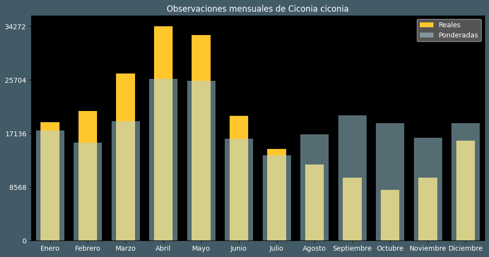

Observaciones por mes
Observations por hora

Categoría IUCN: ?
Género: Ciconia
Familia: Ciconiidae
Orden: Ciconiiformes
Descubrimiento: Linnaeus (1758)
| Idioma | Nombre |
|---|---|
| Afrikaans (af) | Witooievaar |
| Arabic (ar) | لقلق ابيض |
| Belarusian (be) | Белы бусел |
| Bulgarian (bg) | Бял щъркел |
| Catalan (ca) | Cigonya blanca |
| Chinese (zh) | 白鹳 |
| Chinese traditional (zh-TW) | 白鸛 |
| Croatian (hr) | Bijela roda |
| Czech (cs) | Čáp bílý |
| Danish (da) | Hvid stork |
| Dutch (nl) | Ooievaar |
| English (en) | White stork |
| Estonian (et) | Valge-toonekurg |
| Finnish (fi) | Kattohaikara |
| French (fr) | Cigogne blanche |
| German (de) | Weißstorch |
| Greek (el) | Λευκός πελαργός |
| Hebrew (he) | חסידה לבנה |
| Hungarian (hu) | Fehér gólya |
| Icelandic (is) | Hvítstorkur |
| Indonesian (id) | ? |
| Italian (it) | Cicogna bianca |
| Japanese (ja) | シュバシコウ |
| Korean (ko) | ? |
| Latvian (lv) | Baltais stārķis |
| Lithuanian (lt) | Baltasis gandras |
| Maceodnian (mk) | Штрк |
| Malayalam (ml) | വെൺബകം |
| North_sami (se) | Stohpoháigir |
| Norwegian (no) | Stork |
| Persian (fa) | لک لک سفید |
| Polish (pl) | Bocian biały |
| Portuguese (pt) | Cegonha-branca |
| Russian (ru) | Белый аист |
| Serbian (sr) | Bela roda |
| Slovak (sk) | Bocian biely |
| Spanish (es) | Cigüeña blanca |
| Swedish (sv) | Vit stork |
| Thai (th) | นกกระสาขาว |
| Turkish (tr) | Leylek |
| Ukrainian (uk) | Лелека білий |